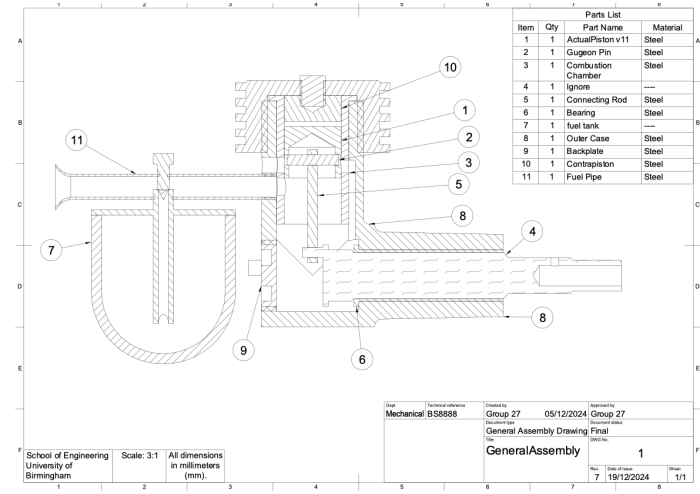
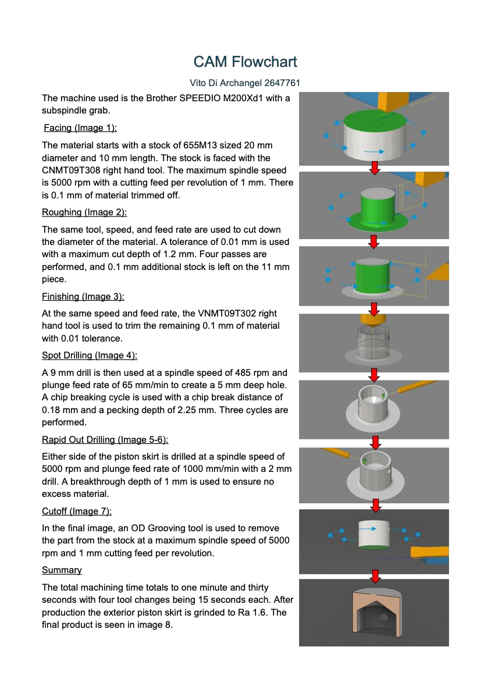

← Past projects
06 / Engine design / Manufacturing
Two-stroke diesel engine for an RC car
Past projectCreate two-stroke diesel engine to output 0.06 bhp at 12,000 rpm to have a run time of 30 minutes.

Specifications
- Create two-stroke diesel engine to output 0.06 bhp at 12,000 rpm to have a run time of 30 minutes.
- Design the engine assembly considering an order of 8,000 units in four months and evaluate the environmental impact
- Design the manufacturing process of the piston from raw material
Contributions
- Sized bore and stroke (11 × 9 mm) for 0.07 bhp, allowing 15% for drivetrain losses.
- Set port timing and sizes with the time–area method; contra-piston for 19:1 running compression.
- Sized the crankshaft from 9.4 MPa peak pressure via bending, shear and von Mises: 6 mm EN36.
Outcomes and Lessons Learnt
- Understood how to design manufacturing process and commands to implement into machines
- Learned the importance of tool choice in manufacturing, balancing production time with quality and tool cost.

